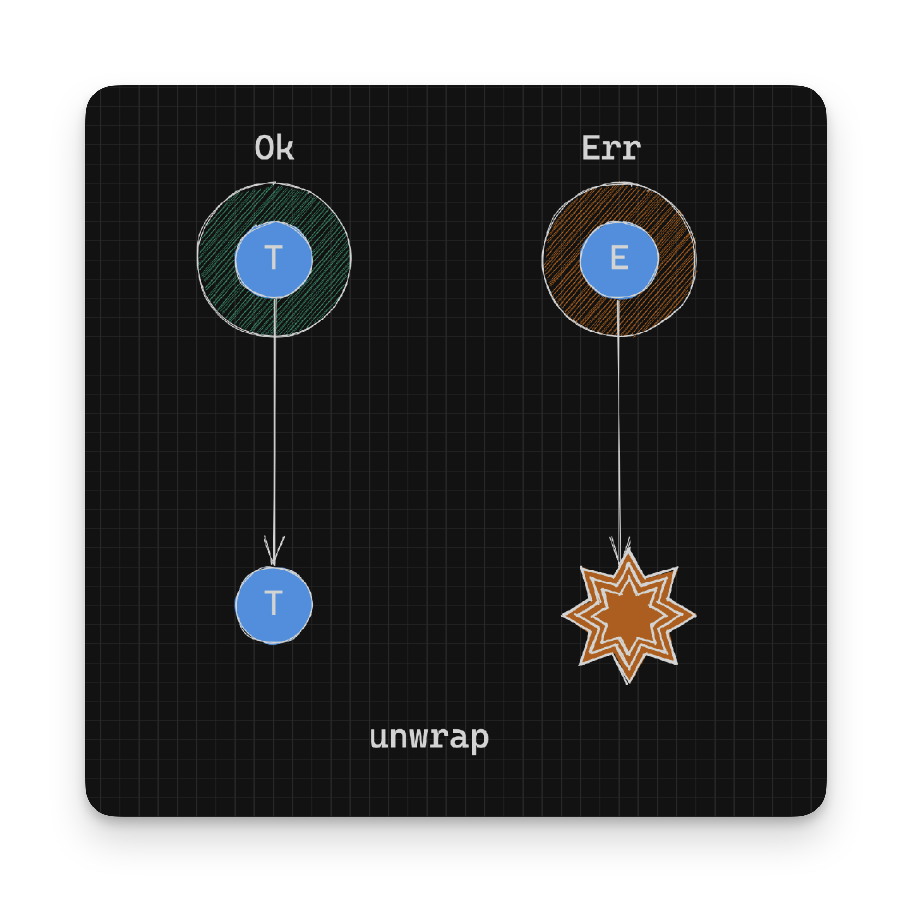

Working With Rust Result - Extracting Values That Can Panic - Part 3
Note: Do not use these functions if you have better/nicer alternatives.
unwrap
What if we want to fail (panic) our program if the supplied age is not twenty five?
We can work forcibly by using unwrap. unwrap is defined as:
pub fn unwrap(self) -> T
where
E: fmt::Debug,The above definition returns the success type T under all conditions. But how can it return a success value T if it’s an Err instance with a value of type E?
// pseudocode
// Given: Result<T, E>
Ok(T) -> T
Err(E) -> T // How do we do this?Unwrap’s implementation demonstrates how this is achieved:
pub fn unwrap(self) -> T
where
E: fmt::Debug,
{
match self {
Ok(t) => t,
Err(e) => unwrap_failed("called `Result::unwrap()` on an `Err` value", &e),
}
}
fn unwrap_failed(msg: &str, error: &dyn fmt::Debug) -> ! {
panic!("{msg}: {error:?}")
}On an Err, the unwrap_failed function is called, which panics. Since panic doesn’t have a type, the never type:!, coerces the result of unwrap_failed to match type T. This explains how we can always return an value of type T even when we don’t have one.

Since we don’t have some sort of default value for T supplied, this function panics when the result is an Err:
let twenty_five_1: u8 = twenty_five(25).unwrap(); // This works because the result is 'Ok'
let twenty_five_2: u8 = twenty_five(20).unwrap(); // This goes boom! because the result is 'Err'
//thread 'main' panicked at src/main.rs:9:22:
//called `Result::unwrap()` on an `Err` value: "20 is not 25!"Also note that the error type E has to have an instance of the Debug trait. This is so that the error can be written out if the unwrap causes a panic:
called `Result::unwrap()` on an `Err` value: "20 is not 25!"expect
What if we wanted to customize the error message when we failed dramatically throwing a panic?
We can do that by using the expect method. expect is defined as:
pub fn expect(self, msg: &str) -> T
where
E: fmt::Debug,
{
match self {
Ok(t) => t,
Err(e) => unwrap_failed(msg, &e),
}
}Similar to the definition for unwrap, a success type of T is always returned or the function panics, but this time with a message we supply:
let twenty_five_1: u8 = twenty_five(25).expect("Ooops! Looks like you're not twenty five"); // This works because the result is 'Ok'
let twenty_five_2: u8 = twenty_five(20).expect("Ooops! Looks like you're not twenty five"); // This goes boom! because the result is 'Err'
//thread 'main' panicked at src/main.rs:9:22:
//Ooops! Looks like you're not twenty five: "20 is not 25!"It’s important to note that the value in the Err: “20 is not 25!” is still printed but we get to customize the message preceding it:
Ooops! Looks like you're not twenty fivePanic-ing your program is probably the last thing you want to do; It’s something you do when you have no other options. As such it’s highly discouraged. We should only panic when we have no other ways of recovering from the error.
But how do you do that? We’ve already seen some ways to do that with pattern matching, map_or_else and map_or. We will look at nicer ways to unwrap a Result next.
- Continue on to Making Things Nicer with Fallbacks
- Back to TOC